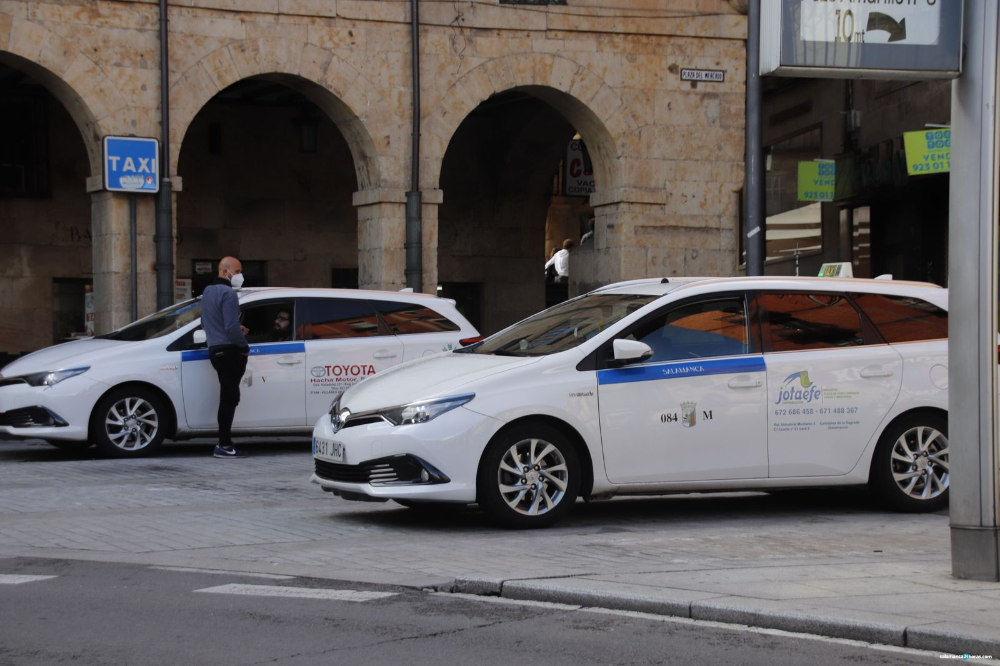

La mejor guía para moverte por la ciudad universitaria.
Autobuses, bicicletas compartidas, patinetes y alternativas eficientes.
¿Cómo moverse por Salamanca?
Salamanca es una ciudad sumamente accesible y perfecta para recorrer a pie o utilizando sus eficientes redes de transporte urbano. Dada su inmensa población universitaria, las alternativas más populares y económicas son la red de autobús urbano, gestionada por Salamanca de Transportes, y el sistema municipal de alquiler de bicicletas, conocido como SALENBICI. Aunque la ciudad no cuenta con licencias VTC como Uber o Cabify, dispone de una amplia flota de taxis disponibles las 24 horas y normativas claras para vehículos de movilidad personal (VMP). En este portal analizamos las tarifas, abonos mensuales y opciones para que elijas la que mejor se adapte a tus trayectos diarios hacia los diferentes campus.

Autobús Urbano
Consulta el mapa de líneas, horarios y todas las tarifas oficiales actualizadas, incluyendo el Abono Mensual Joven y el Abono General.

Bicicletas SALENBICI
Descubre el sistema municipal de préstamo de bicicletas. Horarios, mapa de bases y los requisitos para utilizarlo totalmente gratis con tu abono de autobús.

Patinetes Eléctricos (VMP)
Toda la información sobre la normativa de circulación en Salamanca, la ausencia de sistemas de préstamo y la situación actual de los aparcamientos.

Servicio de Taxis
La principal alternativa de movilidad nocturna y puerta a puerta. Consulta las paradas principales, los métodos de reserva y las tarifas estimadas por trayecto.

Comparativa: Bus Urbano vs SALENBICI
Analizamos al detalle qué opción de movilidad es más rentable para estudiantes y residentes. Comparamos el precio del abono mensual del autobús con la cuota anual del servicio de bicicletas.